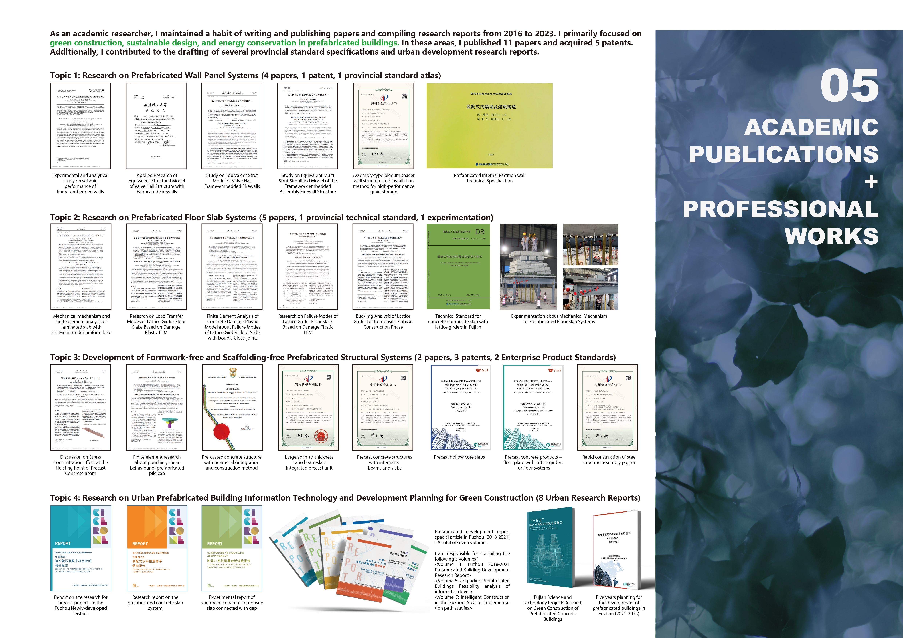

Composite Slab Behaviour & Finite Element Modelling
Structural testing and numerical modelling of composite slabs, with attention to joint behaviour, load transfer, buckling and concrete damage.
RESEARCH & INNOVATION
My research background spans structural engineering, prefabricated construction, finite element modelling, seismic performance, and engineering innovation. This collection highlights my journal publications, conference research, technical standards, interviews, and patent contributions, including work originally published in Chinese and made more accessible through English summaries.
01 / RESEARCH OVERVIEW
An overview of my earlier academic and engineering research, covering structural systems, prefabricated concrete elements, construction technology, and technical innovation.

02 / RESEARCH THEMES
Structural testing and numerical modelling of composite slabs, with attention to joint behaviour, load transfer, buckling and concrete damage.
Precast concrete components, integrated beam-and-slab systems and modular assembly methods for practical construction.
Experimental investigation and finite element analysis of frame-embedded walls and their response to earthquake loading.
03 / PUBLICATIONS & PATENTS
Explore the research through English summaries and links to publication sources, profile records and patent documents.
No works match your search. Try another term or choose All Works.
Patent status labels are information reported by Google Patents, not an independent legal determination. Source links may lead to supporting records rather than article full text.
04 / RESEARCH PROFILES
Follow the original records and connect with me through these research and professional profiles.